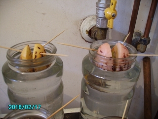
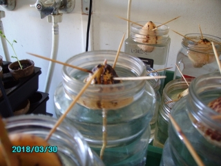
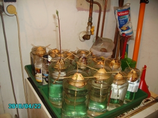
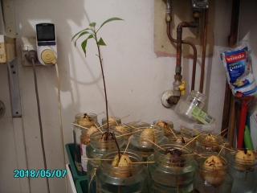
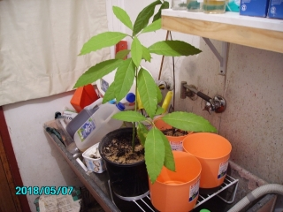
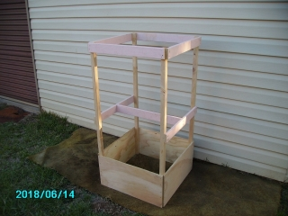
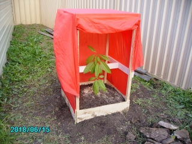

WORTHINGTON'S WORKSHOP
Project - Grow An Avocado Tree
|
|
 Preparing the Avocado for budding I have a fondness for Avocados, to the extent of eating half an Avo each day with half a jar of Anchovies. After paying up to $4.00 each for a poor quality Avo during the off-season, I wondered if it would be possible to grow my own. Since I was accumulating the seeds at the rate of three a week, I soon had plentiful stock to start experimenting. A few investigations on Google revealed the secrets of growing Avos: The seeds are initially sprouted whilst supported in a jar of water. Once they reach about 15-20cm (6-8") they are transferred to a pot and grown to a height of approximately 60cm (24"). Upon reaching this height they are then planted in the outside ground. There is a lot more to it than that and the following article will fill in the details. Utilise a warm, calm place in the house. I use a wooden platform over the second sink plus the top of the drinks fridge in the laundry. There is a westerly facing window with a blind that is opened all day to admit the afternoon winter sun. One outcome will be that you will develop a sense of patience, as the growing time will exceed four months until planting.  An Avocado begin to sprout (1) A source of Avocado seeds, being the pits from Avocados bought at the store. Over the year you will notice the Avocado varieties will change. It is a good idea to collect as many various varieties as this will spread Avocado production across the seasons, rather than a single crop. (2) A decent sized jar to sprout the seeds. I find the cheap Woolworths Homebrand 200g coffee to be a decent drink and the jar to be an ideal size for propagation of the seeds, due to a requirement for a deep feeder root. (3) Toothpicks at three per seed for support in the jar. (4) Water to fill the jar. Tap water is quite OK and should be changed weekly or if slightly cloudy. (5) A 4 to 5 litre pot to grow the avocado once it has reached a height of 20cm. I buy the Decor brand 17cm self watering pot from Bunnings for $4.98. The Coral coloured one is quite pleasant, but costs $6.00. (6) Seeding mix for the potted plant. I buy the Osmocote 25 litre Professional Seed And Cutting Potting Mix from Bunnings at $11.49. This will adequately supply 15 plants in pots. (7) Liquid Fertiliser for the potted plant. I buy the Seasol 2.4L Seaweed Health Tonic Concentrate from Bunnings at $20.63. When watered down to a 4% solution in water, this makes 100 litres and goes a long way. (8) A squeeze bottle for administering the Liquid Fertiliser. Available from Woolies or Bunnings for a few dollars. (9) Potting mix for the planted plant. I buy the RichGro 25 litre All Purpose Potting Mix from Bunnings at $3.95. This will require three bags to supply the 75 litres needed to plant a single Avocado in a raised bed. (10) Fertiliser for the planted plant. I buy the RichGro 15 litre Blood and Bone from Bunnings at $26.98. A litre or two is applied to the planter box for each layer of potting mix. Another effective fertiliser is worm farm soil. (11) Clay Breaker for the planted plant. I buy the Richgro 15kg Natural Gypsum Clay Breaker from Bunnings at $9.76. Two litres is required for each plant under a 60cm x 60cm planter box. This prevents the tap root becoming clogged in the clay to prevent the absorption of nutrients and kill the plant. (12) An 'Avocado House' is a planter box I designed as a protective enclosure and raised bed. It can be made cheaply from a chopped up pallett plus four 1.2m long 19mm x 19mm Pine poles from Bunnings.  Avocados budding en mass (a) Remove the Avocado seed and set aside for a few weeks to dry out and shrink slightly. (b) Peel the shell from the Avocado by delicate use of a toothpick to prise up and remove sections. Do not use a knife, as this will will score the surface and introduce an entry for fungus and rot. (c) Hold the Avocado pointy end up. This is where the stalk will appear and the feeder root will appear from the flat bottom. Check the seed out for possible split lines (indented fold). (d) Insert three toothpicks at 120 degree intervals and a slight upward angle about 2 - 3 cm down from the top of the Avocado. Ensure no toothpick is inserted in a split line. (e) Place the Avocado in the coffee jar supported by the toothpicks. (f) Fill the jar to halfway up the Avocado. (g) Now wait another month as nothing will seem to happen, especially in the colder winter months.  The first leaves appear (a) After a 4 to 6 weeks the Avocado will split in half to a gap of 1cm. Both halves will be held together by a white growth. A white tap root will descend from the bottom, to absorb nutrients from the water and allow growth of the stalk. (b) After another few weeks the green stalk will start to appear above the top of the seed pod. It will be slow at first. Within a month it should have reached a spindly height of 20cm with three small green leaves. (c) After another few weeks the stalk will be 40cm tall with 3 tiny leaves at the top and small buds appearing along the stalk. (d) The stalk will then stagnate in it's growth due to developing a leaf system with 5 or more decent leaves at the top. (e) It will soon be time for planting in a 5 litre pot.  An Avocado planted in a pot (a) Prepare the pot by drilling a hole in the main base section to accommodate the tap root entering the lower water bath. (b) Very gently place the Avocado in the pot, whilst manoeuvring the long tap root into the hole. (c) Fill the pot with potting mix to a depth of 10-12 cm and set the Avocado almost fully buried. This gives room for the fibrous root system to develop. (d) Fill the bottom watering container with water and replace weekly. Every few days give the base of the plant at least 20 squirts of liquid fertiliser to enable the leaf system to develop. (e) Now wait another few months for the stalk to grow up to 60cm and the leaf system to multiply in number and enlarge up to almost 20cm. (f) Once spring has arrived the vicissitudes of winter weather will have departed and then it will be time to plant the Avocado in the ground.  Finished Garden Frame: (a) Timber requirements: 18x pieces 600mm long x approx 100mm wide x 12mm deep, 1x piece 638mm long x approx 100mm wide x 12mm deep, 4x lengths of 1200mm long x 19mm x 19mm cross section. I found a suitable source of cheap timber to be a disassembled pallet, otherwise visit Bunnings for ply section and pine rod. (b) Assemble the frame as per the image with the 638 mm length between the mid height side sections. (c) Add a curtain of shade cloth around all sides and top. Ensure the front sheet facing the winter sun is movable. This acts as a primitive green house to maintain heat and protect from rain and wind. It can be removed when the plant has grown beyond the height of the box.  An Avocado in a frame (a) Select a suitable dry, shaded place free from wind with a lack of extreme heat and cold. Dig a 150mm deep hole x 624mm x 624mm cross section and half bury the base. (b) Spread 2 litres of Clay Breaker to the bottom of the hole and then 3x 25 litre bags of Potting mix alternating with a litre of fertiliser to fill the hole. (c) Dig a hole to size of the pot to accept the Avocado and then plant it. Add another litre of fertiliser to the top and water with a couple of litres of water. (d) Tie the stalk to the mid level cross section (e) Water every couple of days with a couple of litres. If you over water, the leaves will grow pale. (f) If the temperature is extreme, the leaves will be limp. I found this problem in mid winter in Sydney. Learning how to grow a Avocado has been a slow process and the final results of seeing fruit may take a decade. It is a good idea to plant a few trees to have a mixture of sexes and thus ensure pollination. Planting different varieties as bought from shopping will allow a spread of fruiting times and a wider window of harvesting. Probably a more important theme is that I have taken up gardening and intend growing my own vegetables. This has seen purchase of elevated planter boxes, many packs of cheap potting mix and a few seeds. Refer: Gardening Australia Sustainable Gardening Australia Growing avocados: flowering, pollination and fruit set |